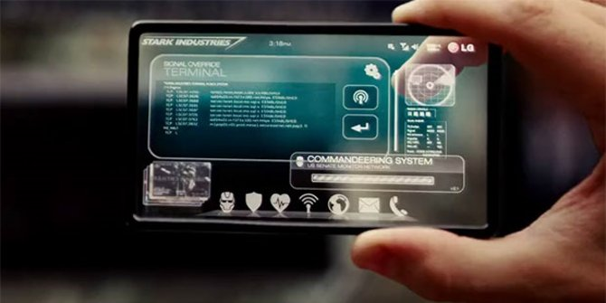

Fitur Kemanan Semakin Ketat Di Handphone

Handphone pada tahun 2040 tidak hanya akan mengenali wajah, suara, dan sidik jari Anda, mungkin nantinya handphone juga bisa mengenali dari cara memegang Anda.
Untuk privasi tambahan, tahun 2040 nantinya akan bisa melacak mata dan piksel Anda di layar utama dengan menyesuaikan sudut pandang sehingga hanya Anda yang
dapat melihat apa yang ada di dalamnya.
Berbicara tentang pelacakan mata atau eye-tracking juga memungkinkan Anda untuk menggunakan handphone tanpa jempol. Menggulir ke atas dan bawah saat membaca
atau mengetik bisa dilakukan dengan gerakan mata. Ini akan menawarkan fungsi handsfree penuh